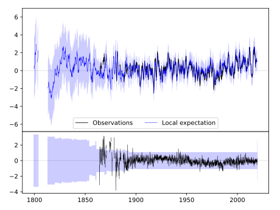
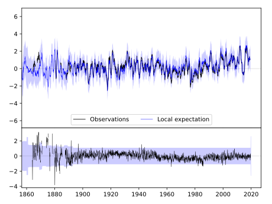
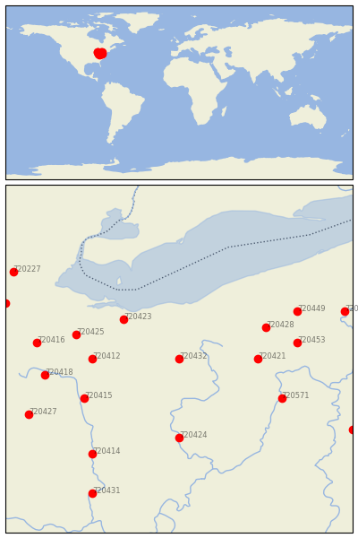

WOOSTER EXP STN [USA]


| Neighbour | Name | Country | Distance | Lon/Lat | Years |
|---|
| 720432 | WOOSTER EXP STN | USA | 0 | -81.9, 40.8 | 1864-2019 |
| 720423 | NORWALK WWTP | USA | 80 | -82.6, 41.3 | 1861-2019 |
| 720421 | MILLPORT 4 NE | USA | 84 | -80.9, 40.8 | 1893-2019 |
| 720412 | BUCYRUS | USA | 92 | -83.0, 40.8 | 1889-2019 |
| 720428 | WARREN 3 S | USA | 102 | -80.8, 41.2 | 1882-2019 |
| 720424 | PHILO 3 SW | USA | 111 | -81.9, 39.8 | 1893-2019 |
| 720425 | TIFFIN | USA | 114 | -83.2, 41.1 | 1873-2019 |
| 720415 | DELAWARE | USA | 115 | -83.1, 40.3 | 1893-2019 |
| 720571 | WELLSBURG WTR TRMT P | USA | 123 | -80.6, 40.3 | 1877-2019 |
| 720453 | NEW CASTLE 1 N | USA | 128 | -80.4, 41.0 | 1893-2019 |
| 720449 | GREENVILLE 2 NE | USA | 142 | -80.4, 41.4 | 1871-2019 |
| 720418 | KENTON | USA | 145 | -83.6, 40.6 | 1862-2019 |
| 720416 | FINDLAY WPCC | USA | 152 | -83.7, 41.0 | 1886-2019 |
| 720414 | CIRCLEVILLE | USA | 162 | -83.0, 39.6 | 1893-2019 |
| 720427 | URBANA WWTP | USA | 178 | -83.8, 40.1 | 1854-2019 |
| 720448 | FRANKLIN | USA | 188 | -79.8, 41.4 | 1893-2019 |
| 720429 | WAUSEON WTP | USA | 199 | -84.1, 41.5 | 1870-2019 |
| 720431 | WAVERLY | USA | 210 | -83.0, 39.1 | 1883-2019 |
| 720457 | UNIONTOWN 1 NE | USA | 211 | -79.7, 39.9 | 1877-2019 |
| 720227 | ADRIAN 2 NNE | USA | 213 | -84.0, 41.9 | 1870-2019 |